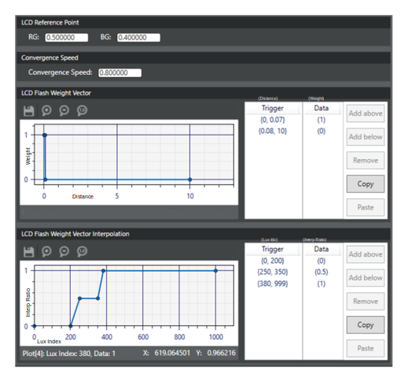

Tune LCD flash
-
In the left pane, click the AWB tab, then click LCD flash
in the list.
-
In the LCD Reference Point panel, add the coordinates of the LCD
reference point in the RG: and BG: fields.
-
Enter a value in the Convergence
Speed field.
-
To set a distance weight trigger, do the following in the LCD
Flash Weight Vector panel:
-
In the Trigger
column, double-click the {0, 0} entry to open the edit dialog. Update
the start and end values and click outside the box to save the
change.
-
In the Data
column, double-click the (0) entry to open the edit dialog. Update the
weight value for this distance trigger and click outside the box to save
the change.
-
To add more triggers, use the Add above or Add below buttons to add a new blank trigger row.
Repeat the previous two substeps to set the trigger range and associated
weight value.

-
To set a lux index-based weight adjustment, do the following in
the LCD Flash Weight Vector Interpolation panel:
-
In the Trigger
column, double-click the {0, 0} entry to open the edit dialog. Update
the lux index start and end values and click outside the box to save the
change.
-
In the Data
column, double-click the (0) entry to open the edit dialog. Update the
interpolation ratio for this lux index trigger and click outside the box
to save the change.
-
To add more triggers, use the Add above or Add below buttons to add a new blank trigger row.
Repeat the previous two substeps to set the trigger range and associated
interpolation ratio.
-
To adjust a trigger range or weight value, double-click the
appropriate entry to open the edit dialog. Update the value and click outside
the box to save the change.
-
Click .